Jorge Fossati es un destacado director técnico y exfutbolista uruguayo. Comenzó su carrera como arquero en clubes como Montevideo Wanderers y Peñarol. Tras su retiro, se dedicó a la dirección técnica, obteniendo títulos importantes, incluyendo la Copa Libertadores con Nacional en 1988. En 2024, asumió como director técnico de la selección uruguaya, buscando revitalizar al equipo con su enfoque táctico y experiencia. Fossati es conocido por su compromiso con el fútbol y su capacidad para gestionar talentos.
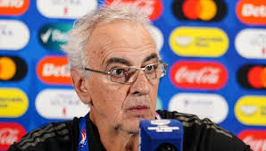Dorival Júnior es un destacado director técnico y exfutbolista brasileño. Nació en São Paulo y jugó como mediocampista antes de dedicarse a la dirección técnica. Ha dirigido a varios clubes importantes, como Santos y Flamengo, logrando títulos significativos y reconocimiento por su estilo de juego ofensivo y desarrollo de talentos. En 2024, asumió como director técnico de la selección brasileña, buscando mantener la tradición futbolística del país y competir al más alto nivel en torneos internacionales.
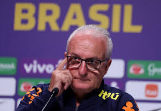Gustavo Costas es un entrenador y exfutbolista argentino. Como defensor, jugó en clubes como Rosario Central. Tras su retiro, se destacó como técnico en varios equipos de Sudamérica, incluidos San Lorenzo e Independiente Medellín, donde logró importantes títulos. En 2023, asumió la dirección de la selección boliviana, buscando mejorar su desempeño en competiciones internacionales. Es reconocido por su enfoque táctico y capacidad para motivar a sus jugadores.
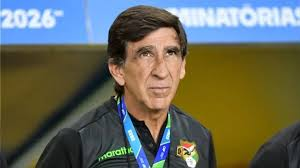Félix Sánchez Bas es un director técnico español que asumió la dirección de la selección ecuatoriana en 2023. Antes, destacó en el desarrollo de talentos en la academia de fútbol de Qatar, donde trabajó con equipos juveniles. Es conocido por su enfoque táctico y su habilidad para implementar un estilo de juego atractivo. Su experiencia en el fútbol internacional lo posiciona como un líder clave para elevar el rendimiento de Ecuador en competiciones internacionales.
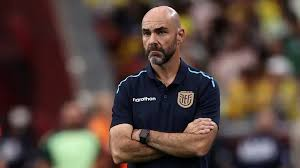Ricardo Gareca es un entrenador y exfutbolista argentino, reconocido por su exitosa carrera como director técnico. Asumió la dirección de la selección chilena en 2024, después de haber destacado con la selección peruana, llevándola a la Copa del Mundo 2018 y a la final de la Copa América en 2019. Gareca es conocido por su enfoque táctico, su capacidad para motivar a los jugadores y su experiencia en el fútbol sudamericano. Su llegada a Chile busca revitalizar el equipo y devolverlo a la competencia internacional.
Lionel Scaloni Nacimiento: 16 de mayo de 1978, Pujato, Argentina. Carrera: Exjugador de fútbol, Scaloni fue parte de la selección argentina en el Mundial 2006. Comenzó su carrera como entrenador en 2018, dirigiendo a la selección mayor. Ganó la Copa América 2021 y la Finalissima 2022.
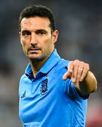Fernando Batista es un director técnico argentino que asumió la dirección de la selección venezolana en 2023. Anteriormente, trabajó en las categorías juveniles de Argentina y dirigió varios equipos en ligas locales. Es conocido por su enfoque en el juego ofensivo y su habilidad para desarrollar jóvenes talentos. Su objetivo es mejorar el rendimiento de Venezuela en competiciones internacionales y fortalecer su competitividad en el fútbol sudamericano.
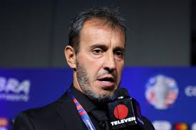Néstor Lorenzo es un director técnico argentino que asumió la dirección de la selección colombiana en 2022. Con experiencia previa en clubes de Argentina y Colombia, es conocido por su enfoque táctico y su habilidad para motivar a los jugadores. Su objetivo es consolidar al equipo en competiciones internacionales y maximizar el talento colombiano en el fútbol sudamericano.
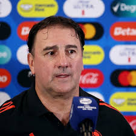Diego Alonso es un director técnico uruguayo que asumió la dirección de la selección nacional en 2021. Antes de su nombramiento, tuvo éxito en clubes de Uruguay, México y España. Llevó a Uruguay a la Copa Mundial de la FIFA 2022, destacándose por su enfoque táctico y su capacidad de gestión. Su objetivo es consolidar al equipo en el fútbol sudamericano y competir a alto nivel en torneos internacionales.
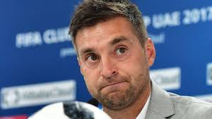Alfaro inició su trayectoria como director técnico en equipos de divisiones menores y ascendió a la Primera División con Talleres de Córdoba. Ha dirigido varios clubes en Argentina, incluyendo Huracán, San Lorenzo y Atlético Tucumán. Desde 2018, es el director técnico de la selección ecuatoriana de fútbol, logrando la clasificación para la Copa Mundial de la FIFA 2022. Es conocido por su estilo de juego pragmático y su capacidad para adaptar tácticas según sus jugadores y rivales. Logros: Reconocido por su enfoque defensivo y su habilidad para motivar a los jugadores, ha sido fundamental en el desarrollo del fútbol ecuatoriano en el ámbito internacional.
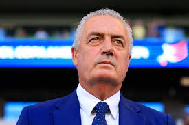Se anticipa un partido emocionante, donde Perú buscará consolidar su sólido esquema defensivo. La clave estará en cómo logren contener el juego ofensivo de Brasil, que históricamente ha sido agresivo y dinámico. Las decisiones tácticas de ambos entrenadores serán determinantes.
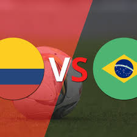Brasil y Colombia han forjado una rivalidad emocionante en el fútbol sudamericano. Con el talento ofensivo de Brasil y la solidez defensiva de Colombia, se espera un duelo táctico donde cada equipo buscará imponer su estilo de juego desde el primer minuto.
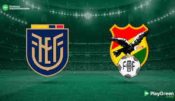Ecuador y Bolivia llegan a este partido con estilos de juego distintos. Ecuador, conocido por su velocidad y juego vertical, buscará aprovechar su localía y la altura para imponer su ritmo. Bolivia, con su tradicional enfoque más físico y defensivo, intentará frenar el ímpetu ecuatoriano.
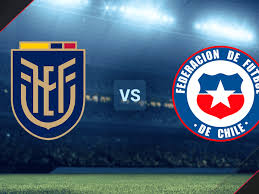cuador y Chile han tenido una intensa rivalidad en los últimos años, y cada encuentro se convierte en una batalla por puntos cruciales. Ambos equipos llegarán motivados, sabiendo que una victoria puede ser vital en sus aspiraciones en las eliminatorias.
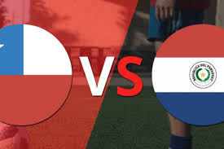Chile y Paraguay han tenido una rivalidad histórica en el fútbol sudamericano, y cada encuentro es esperado con gran expectación. Ambos equipos saben que una victoria puede ser clave en sus aspiraciones por clasificar a los próximos torneos internacionales.
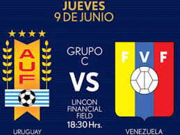Argentina llega a este partido como favorito, gracias a su rica historia futbolística y a un plantel repleto de talento, incluyendo a figuras como Lionel Messi. Sin embargo, Venezuela ha demostrado ser un rival competitivo y no se lo pueden subestimar.
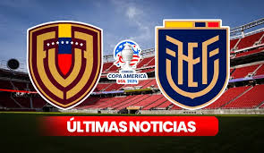Brasil y Colombia han forjado una rivalidad emocionante en el fútbol sudamericano. Con el talento ofensivo de Brasil y la solidez defensiva de Colombia, se espera un duelo táctico donde cada equipo buscará imponer su estilo de juego desde el primer minuto.
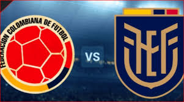Ecuador y Bolivia llegan a este partido con estilos de juego distintos. Ecuador, conocido por su velocidad y juego vertical, buscará aprovechar su localía y la altura para imponer su ritmo. Bolivia, con su tradicional enfoque más físico y defensivo, intentará frenar el ímpetu ecuatoriano.
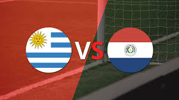cuador y Chile han tenido una intensa rivalidad en los últimos años, y cada encuentro se convierte en una batalla por puntos cruciales. Ambos equipos llegarán motivados, sabiendo que una victoria puede ser vital en sus aspiraciones en las eliminatorias.
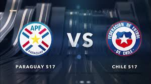El partido entre Paraguay y Chile siempre es emocionante, ya que ambos equipos tienen una rica historia de rivalidad en el fútbol sudamericano. Cada encuentro es una oportunidad para que cada selección demuestre su fortaleza y busque la victoria en un contexto competitivo.
La CONMEBOL es el corazón del fútbol sudamericano, uniendo a naciones a través de la pasión y el talento en la cancha. Desde los legendarios equipos que han dejado su huella en la historia hasta los nuevos talentos que emergen cada día, el fútbol en esta región continúa inspirando a millones. A medida que seguimos apoyando a nuestras selecciones y clubes, recordemos que el espíritu del juego va más allá de los resultados; se trata de la camaradería, la rivalidad sana y el amor por el deporte. ¡Que el fútbol sudamericano siga brillando en el escenario mundial!
Autor: Luis Diego Sipion Galvez